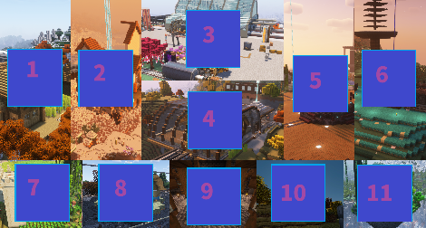

About and Announcements
Links
Seasons
Download Tutorial
Go to the Seasons Table and download the 'World Download' for the season you want.
After it finishes downloading, extract the zip file, and move the new folder to your Minecraft saves folder (by default for windows it is "%appdata%\.minecraft\saves").
Make sure the world folder inside of the 'saves' folder has a file called 'level.dat' (if it instead has another folder, then move the contents of that folder into the world folder (which should be in the 'saves' folder)).
When you open Minecraft it should be in your singleplayer worlds.
It is highly recommended that you play on the original version of that world with the same mods and datapacks.
Modifications
Players
Credit
Images
| Name | Image | Credit | ||||||||||||||||||||||||||||||||||||||||||||||||
|---|---|---|---|---|---|---|---|---|---|---|---|---|---|---|---|---|---|---|---|---|---|---|---|---|---|---|---|---|---|---|---|---|---|---|---|---|---|---|---|---|---|---|---|---|---|---|---|---|---|---|
| Icon and Main Image |   |
Credit is on the Information page | ||||||||||||||||||||||||||||||||||||||||||||||||
| Builds on Main Image | 
|
|||||||||||||||||||||||||||||||||||||||||||||||||
Rules
Main
If an Admin believes someone should be banned, Admins will discuss and vote to decide how long to ban the Member for (between 0 and 8 days).
Any action which harms the server itself or host machine will result in a permanent ban (no vote will be done, this decision can be taken alone by Dohst).
The rules may change over time.
Community Code of Conduct
Allowed Client Modifications
Anything that does not give you an unfair advantage over other players, and does not disadvantage other players is likely allowed.
Types of modifications which are allowed:
- Improvements to minecraft's game performance without making changes to it, such as mods that improve FPS, reduce stuttering, improve memory usage.
- Mods that change the look of the game without changing how the game is played.
- Increased visibility for things that already have visual indicators in vanilla minecraft.
- Decrease the visibility, or outright remove textures, as long as they do not change block properties.
If your mod does not fit into one of the above categories then you should assume that it is not allowed.
An incomplete list of mods and resource packs which are considered to give unfair advantages: hacking clients, x ray, freecam, inventory walk, world downloaders, seed finders, ....
Social Behavior and Online Safety
- Please be respectful of other Members and Admins.
- Discrimination and hate speech will not be tolerated.
- Sensitive topics like politics, war and religion are not allowed.
- Do not use players' real names in public content, instead, use their online name or minecraft username.
- Try to avoid unnecessary conflict. If you have concerns with a Member or Admin, contact Dohst or another Admin.
New Member Criteria
- Must own an official copy of 'Minecraft: Java Edition' or 'Minecraft: Bedrock Edition', and have the ability to play online.
- Must know at least two members personally in real life.
- Must not have been permanently banned in the past.